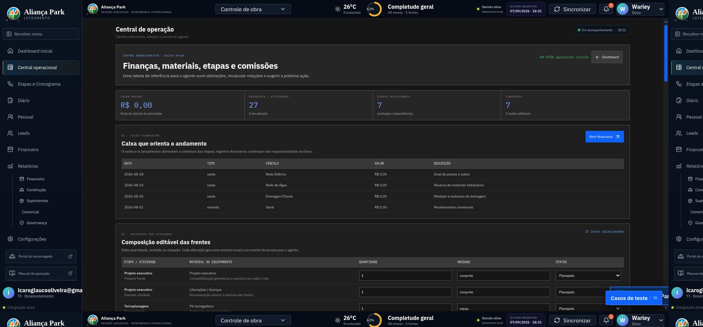
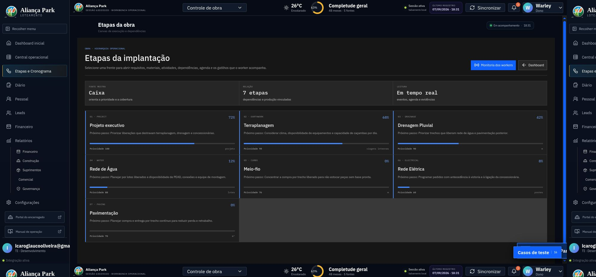
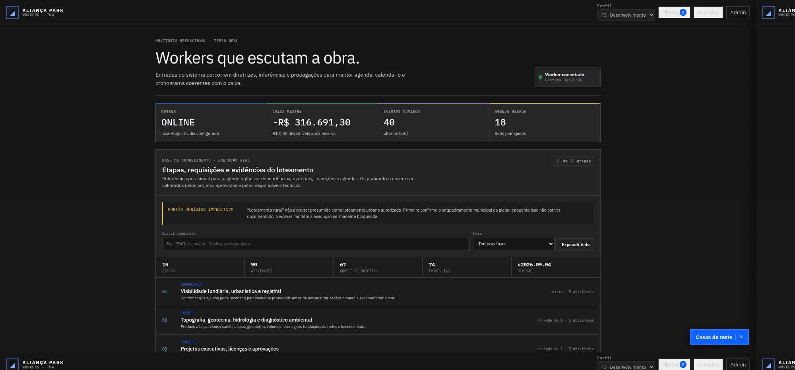
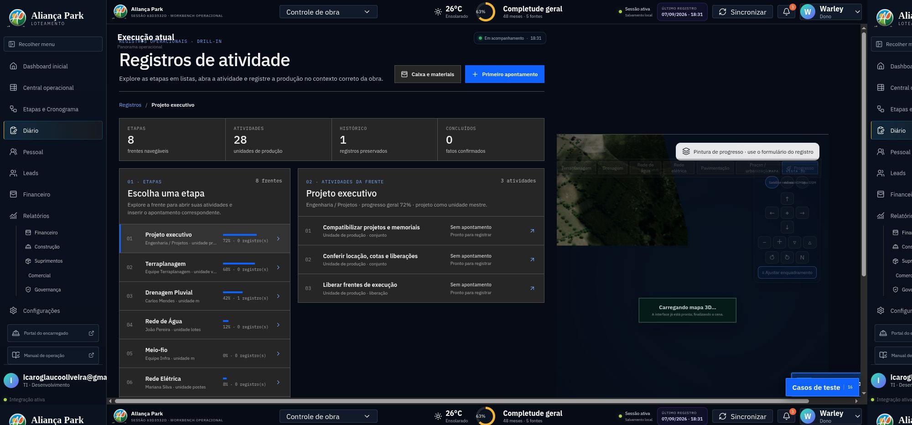
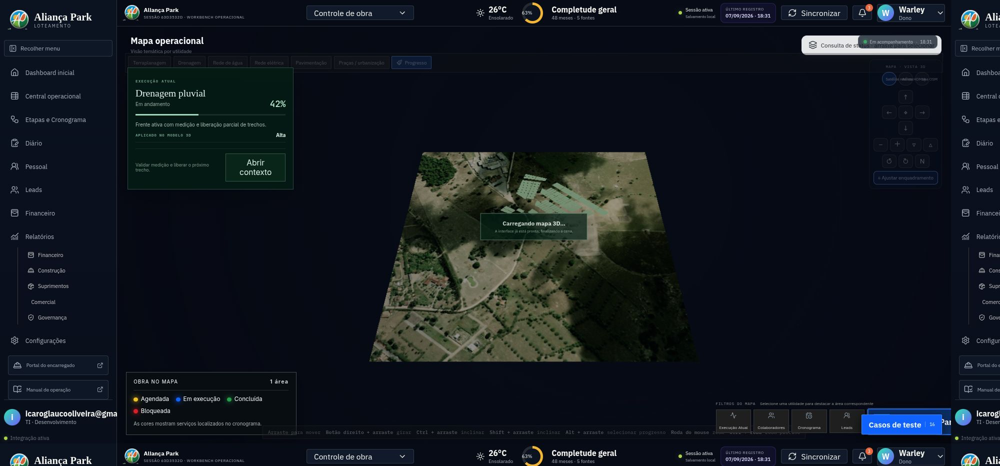

01 / PUBLIC
Leads e reserva
Landing page de atendimento com mapa do loteamento, markers de disponibilidade, chat de intenção e caminho para identificação e reserva.
mapa 3DchatCRM
O Aliança Park conecta captação comercial, mapa 3D, execução de obra, materiais, equipes, comprovações e automações em uma mesma leitura operacional — do primeiro lead ao registro confirmado em campo.
A experiência foi organizada para manter telas longas como consulta e colocar a entrada de fatos em widgets, registros e ações de contexto.
Landing page de atendimento com mapa do loteamento, markers de disponibilidade, chat de intenção e caminho para identificação e reserva.
Dashboard administrativo com caixa mestre, frentes ativas, materiais, diário, corretores, relatórios e atalhos para registrar fatos.
Portal mobile para encarregados confirmarem serviços, adicionarem evidências, localização, produção e observações do diário de obra.
O fluxo abaixo resume a separação entre entradas autorizadas, ciclo de workers, inferência estruturada e atualizações para cada ponta.
Fluxo conceitual documentado para portfólio · a implantação atual mantém notificações externas em modo pseudo/hook até a configuração de produção.
A modelagem evita ilhas de informação: o lote conecta a intenção comercial; a atividade conecta produção, material, equipe, prova e cronograma.
Disponibilidade, preço proporcional à área e intenção de compra.
Conversa, documentos e confirmação humana antes do compromisso.
Sequência, dependência, unidade de produção e área selecionada no mapa 3D.
Fato confirmado alimenta progresso, materiais, caixa, calendário e alertas.
Capturas da execução local do sistema, selecionadas para mostrar as superfícies principais, estados e detalhes de operação.










Sequência de referência do loteamento rural. Cada etapa pode abrir atividades, requisitos, materiais, equipe e localização física.
Compatibilização de geometria, cotas, licenças e interfaces.
Corte, aterro, transporte e compactação medidos por produção.
Valas, caixas, PVs, bocas de lobo, assentamento e testes.
Tubos PEAD, cavaletes e ramais para os lotes.
Contorno de quadras, alinhamento e acabamento das ruas.
Paralelepípedos aplicados por trecho liberado e conferido.
Última frente de implantação, dependente de requisitos e prazo da concessionária.
As-built, certificados, aceite, pendências e fechamento.
O worker recebe o contexto global, calcula elegibilidade pelo caixa, interpreta dependências e devolve saídas estruturadas. A IA apoia a compreensão; a persistência e a autorização continuam sendo regras do sistema.
{
"event": "field_record.confirmed",
"stage": "earthwork",
"activity": "road-opening",
"production": { "value": 240, "unit": "m3" },
"context": { "cash": 48000, "team": "equipe A" },
"relations": [{ "to": "drainage", "type": "libera trecho" }],
"actions": ["update_schedule", "recalculate_materials"],
"notifications": [{ "audience": "owner", "reason": "rendimento" }]
}
O stack foi escolhido para manter o protótipo executável localmente, publicável no Firebase Hosting e preparado para workers externos.
Servidor HTTP local, módulos ES, rotas administrativas e páginas públicas sem build obrigatório no ciclo de desenvolvimento.
Web Components e camada de cena para modelo 3D, loteamento, markers, seleção de polígonos e leitura geográfica.
Espelho de mudanças e canal de observação para notificações e atualização dos clientes nas pontas.
Endpoint configurável para compreensão contextual, mantendo segredo no worker e contrato estruturado na aplicação.
Shell instalável e portal mobile dedicado a administradores e encarregados de campo.
Estado operacional, trilha de eventos, compras, caixa, diário, anexos e regras de autorização para desenvolvimento.
Testes de contrato, worker, inferência mock, compra, navegação e verificação visual das páginas.
Base preparada para relatórios mensais, anuais e acumulados, com repasses por corretor e razões de comissão editáveis.
O visual reduz ruído em tarefas críticas: fundos neutros, linhas finas, tipografia monoespaçada para dados e cor reservada aos estados.
O produto separa quem pode mudar a fonte mestre, quem calibra o sistema e quem registra o fato operacional.
| superfície / papel | responsabilidade | evidência de qualidade |
|---|---|---|
| Dono | Altera o fluxo de caixa, fonte de prioridade e cobertura das etapas. | autorização + histórico |
| Administrador | Calibra regras, catálogos, relações, workers e configurações. | diretriz versionada |
| Encarregado | Registra produção, confirma serviço, adiciona foto/comprovante e diário. | registro de campo |
| IA / worker | Compreende, relaciona, sugere, agenda e notifica dentro do contrato. | saída estruturada |
| Teste de ciclo | Simula compra, produção e alteração de caixa para observar agenda e propagação. | 24/24 checks locais |
O repositório mantém os contratos técnicos, operacionais e editoriais para que o portfólio seja verificável e não apenas visual.
Os próximos passos naturais são publicar regras Firebase, ligar autenticação por perfil, habilitar o endpoint de inferência com segredo no worker, validar dados executivos e concluir o pipeline de relatórios.